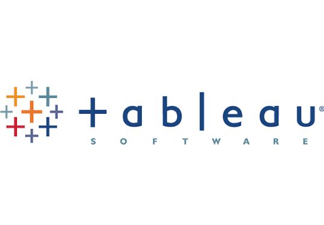

My Projects
Having taken a course in Film Art where I analysed the ideas captured in popular films in the past such as 2001: A Space Odyssey, I have gained a deeper appreciation of how films are made and what makes them stand out. Thus, this course is what motivated my project on movies analysis.
In this project, I investigate what makes a movie successful and how movie performances and preferences have changed over time.


This contains all the Tableau Dashboards I have done.
This project looks at HDB resale prices in Singapore and uses a linear regression and a decision tree model to predict resale prices.

This project uses the Tkinter interface to simulate stock price paths, using the Geometric Brownian Motion (GBM) model.

Donec eget ex magna. Interdum et malesuada fames ac ante ipsum primis in faucibus. Pellentesque venenatis dolor imperdiet dolor mattis sagittis magna etiam.

This project explores the International Math Olympiad Dataset and investigates if stereotypes about who can do well in Mathematics still hold true and how these stereotypes might be changing over time.